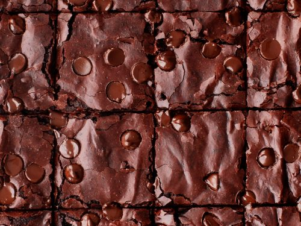

Brownies

Description
Looking for the best brownie recipe on the internet? You've come to the right place! These rich, fudgy brownies are topped with a decadent homemade frosting. The Allrecipes community can't get enough — this top-rated brownie recipe is one of our most popular desserts ever!
Details
- Prep Time: 15 minutes
- Cook Time: 30 minutes
- Total Time: 45 minutes
- Servings: 16
Ingredients
For the frosting
- 3 tablespoons softened butter
- 3 tablespoons unsweetened cocoa powder
- 1 tablespoon honey
- 1 teaspoon vanilla extract
- 1 cup confectioners' sugar
For the brownie batter
- 1/2 cup butter
- 1 cup white sugar
- 2 eggs
- 1 teaspoon vanilla extract
- 1/3 cup unsweetened cocoa powder
- 1/2 cup all-purpose flour
- 1/4 teaspoon salt
- 1/4 teaspoon baking powder
Method
- Preheat the oven to 350°F. Then, grease and flour an 8 inch square pan.
- Melt 1/2 cup butter in a large saucepan. Remove from heat, and stir in sugar, eggs, and 1 teaspoon vanilla. Beat in 1/3 cup cocoa, flour, salt, and baking powder. Spread batter into prepared pan.
- Bake in the preheated oven until top is dry and edges have started to pull away from the sides of the pan, about 25 to 30 minutes. Let cool briefly before frosting.
- To make the frosting: Combine softened butter, confectioners' sugar, 3 tablespoons cocoa, honey, and 1 teaspoon vanilla extract in a bowl. Stir until smooth. Frost brownies while they are still warm.
All information sourced from allrecipes.com